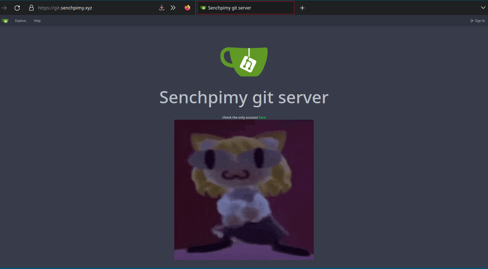

Gitea es un programa OpenSource para poder hostear una instancia de un servidor de git, y aprovechando que ya tengo un dominio con una computadora quise hostear mis propios proyectos usando este programa, este programa es de facil instalacion, pero si le quisieras modificar alguna plantilla hay que tener cuidado en que carpeta y usuario lo instala, primero hay que descargar el binario y luego hacerlo ejecutable.
wget -O gitea https://dl.gitea.io/gitea/1.18.1/gitea-1.18.1-linux-amd64
chmod +x gitea
Luego hay que crear un usuario que ejecute gitea, pues este no puede ser ejecutado por
root, en la pagina oficial recomiendan el siguiente comando:
adduser \
--system \
--shell /bin/bash \
--gecos 'Git Version Control' \
--group \
--disabled-password \
--home /home/git \
git
Pero con que este no tenga permisos elevados y una carpeta en
/home es suficiente, luego necesitamos crear las carpetas
custom,data,log en
/var/lib/gitea, y se hace de la siguiente manera en un solo comando.
mkdir -p /var/lib/gitea/{custom,data,log}
Despues hay que mover el ejecutable de gitea a la carpete de los binarios.
mv gitea /usr/bin/gitea
Luego tenemos que hacer que el usuario que creamos posea estas carpetas, ademas de darle sus permisos especiales. Despues de esto los siguientes comando son para darle permiso al instalador web.
chown -R git:git /var/lib/gitea/
chmod -R 750 /var/lib/gitea/
mkdir /etc/gitea
chown root:git /etc/gitea
chmod 770 /etc/gitea
Luego hay que crear un servicio de
systemd, en el repositorio de gitea hay un ejemplo pero yo tengo otro el cual es un poco diferente, este archivo hay que guardarlo en
/etc/systemd/system como
gitea.service
[Unit]
Description=Gitea (Git with a cup of tea)
After=syslog.target
After=network.target
[Service]
# Uncomment the next line if you have repos with lots of files and get a HTTP 500 error because of that
# LimitNOFILE=524288:524288
RestartSec=2s
Type=simple
User=git
Group=git
WorkingDirectory=/var/lib/gitea/
ExecStart=/usr/bin/gitea --config /var/lib/gitea/custom/conf/app.ini
Restart=always
Environment=USER=git HOME=/home/git GITEA_WORK_DIR=/var/lib/gitea
[Install]
WantedBy=multi-user.target
Hay que tener atencion si es que el usuario que se creo para que ejecutara gitea sea el mismo que esta especificado en el servicio de systemd. En este caso estoy haciendo que al momento que gitea se ejecute tome como el archivo de configuracion aquel que esta en
/var/lib/gitea/custom/conf/app.ini, que en este caso tendriamos que sacar el archivo de configuración desde su github, pues son caso 3,000 lineas de posibles configuraciones y explicaciones sobre su funcionamiento, se have con el siguiente comando.
curl https://raw.githubusercontent.com/go-gitea/gitea/main/custom/conf/app.example.ini >> app.ini
chmod 640 app.ini
Y depende en que carpeta estemos hay que mover este archivo a la ubicacion especificada; En este archivo hay cambiar el puerto en el que se ejeucta, el dominio (si es que tenemos uno), en mi caso despues de la instalacion web quedo de la siguiente manera:
APP_NAME = Senchpimy Git Server
RUN_USER = git
RUN_MODE = prod
[repository]
ROOT = /var/lib/gitea/data/gitea-repositories
[server]
DOMAIN = localhost
HTTP_PORT = 3000
ROOT_URL = https://git.senchpimy.xyz
Yo borre algunos campos pues estos tenian información delicada pero esos son los que hay que cambiar, y lo que configure en mi caso, fue para mi dominio que ya tenia.
Y si todo esta bien configurado solo hay que ejecutar los siguientes comandos.
systemctl enable gitea.service
systemctl start gitea.service
Y ahora si nos dirigimos en este caso seria a senchpimy.xyz:3000, deberiamos ver la pagina de instalacion web, en el tipo de database escogi sqlite, pues solo estare yo usando ese ervidor y no hay necesidad de una databse mas robusta, en este apartado nos dara opcion de modificar las cosas más importantes para que funcione, despues de que ya esta configurado, el servidor ya es usable, en este caso solo desde el puerto
3000 y para cambiar esto hay que hacerlo desde
nginx (más información aqui).
Finalmente me gustaria cambiar la pagina principal que se muestra cuando no hay una cuenta registrada, para lograr esto hay que crear una carpeta llamada
templates dentro de la carpeta
custom que creamos en la parte de arriba, y despues hay que crear la template de la que va a remplazar a la original, en este caso seria
home y por lo tanto hay que guardarlo como
home.tmpl, Despues hay que copiar el
ejemplo que esta en el repositorio de gitea, y se supone que es la misma que trae por defecto, pero al momento de cambiarla los siguientes bloques me daban error y no permitian que el servicio completo empezara a ejecutarse
{{.locale.Tr "startpage.platform_desc" | Str2html}}
Asi que solo borre todas las lineas que tuvieran ese contenido, de todos modos era parte de lo que me gustaria haber quitado, y finalmente es un archivo normal de html y este ya se puede modificar como uno quiera. Y para aplicar los cambios hay que
restart el servicio de gitea.
Finalmente me quedo asi:
